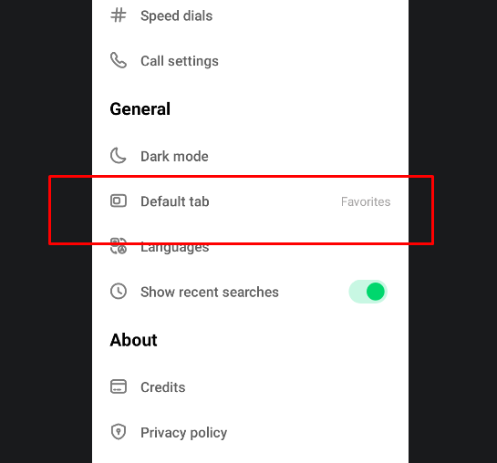
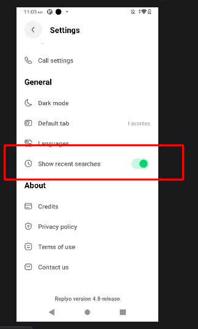
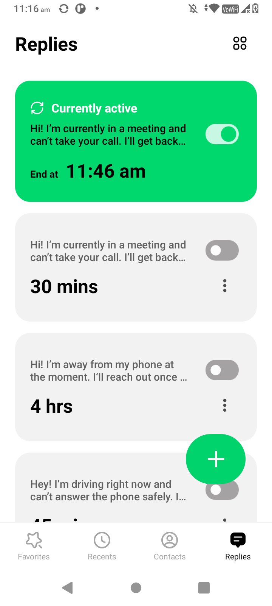
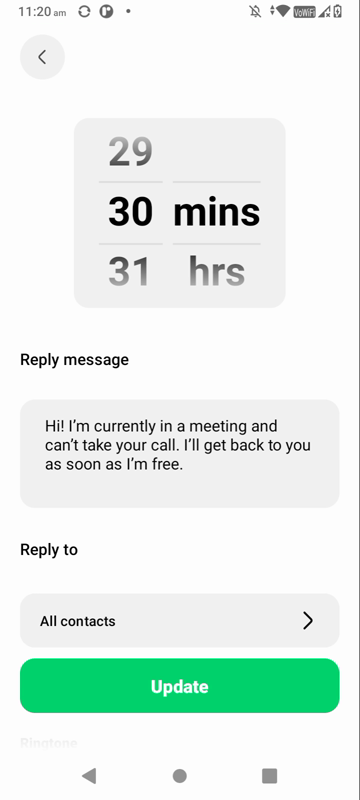
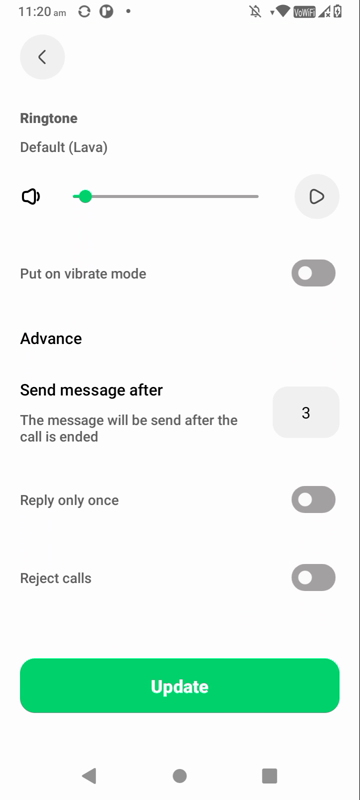
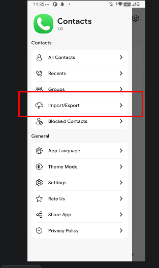
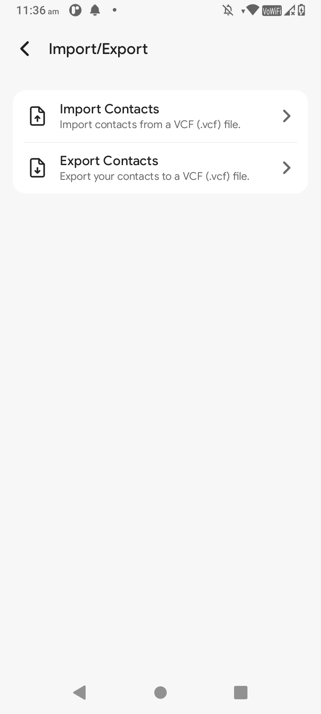
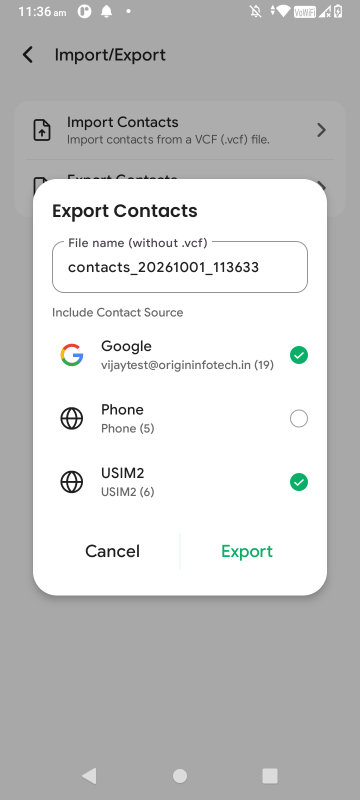
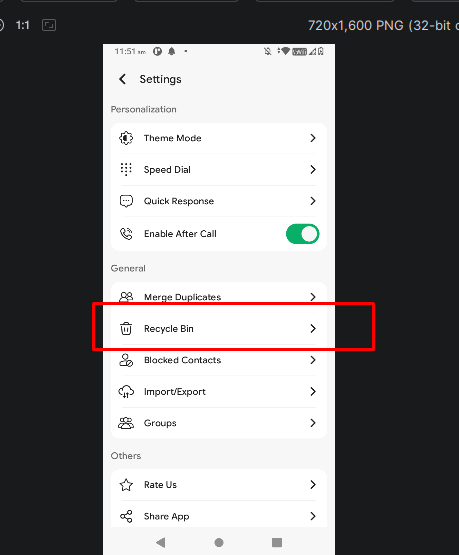
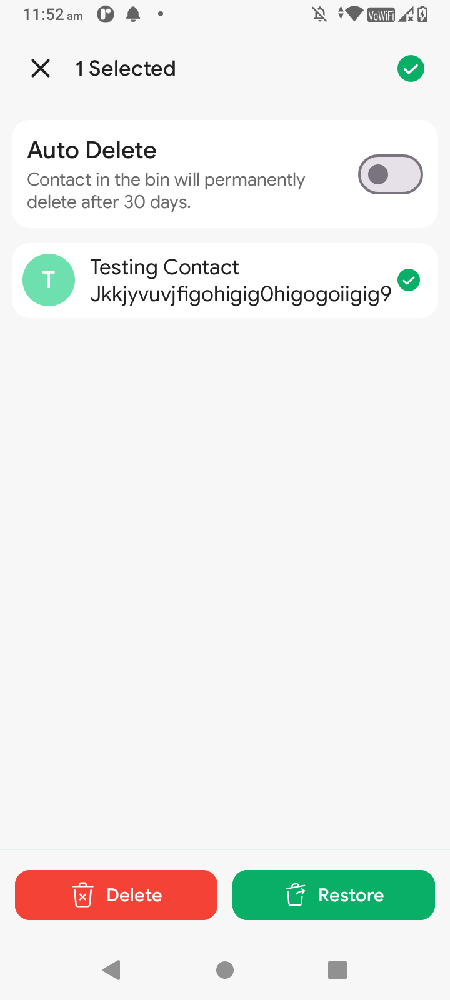

Origin Infotech · Feature research · October 2026
Six ideas worth bringing into our dialer.
We studied two phone apps and picked the features people would actually notice. Each one is explained in plain words, with a real-life example and the screens it lives on.
Replyo may no longer be on Google Play (reportedly removed in June 2024). If its link doesn't open, search for “Replyo: Dialer with Auto-reply”.
| # | Feature | In plain words | Where |
|---|---|---|---|
| 1 | Default tab | Choose which screen opens first | Settings |
| 2 | Recent searches | Show or hide what you searched before | Settings |
| 3 | Auto replies | Text callers automatically when you're busy | Replies tab |
| 4 | Call handling | Decide exactly how busy mode treats calls | Replies tab |
| 5 | Import / export contacts | Back up or move your contacts | Side menu |
| 6 | Recycle bin | Get back contacts you deleted by mistake | Settings |
Feature 1 · Settings
Default tab
Pick which screen you see first when you open the app.
Real life
You mostly call the same five people, so you make Favorites the first screen and skip a tap every time.
- How to find it
- Settings → General → Default tab
- Seen in
- Replyo ↗
- ●Your current choice shows on the right of the row, for example Favorites.
- ●Tap the row to choose a different tab.

Feature 2 · Settings
Show recent searches
One switch that shows or hides the people you searched for recently.
Real life
You searched for “Mom” a minute ago. Next time she's waiting at the top, no typing needed. Prefer privacy? Turn it off.
- How to find it
- Settings → General → Show recent searches
- Seen in
- Replyo ↗
On
Recent searches are shown.
Off
Search starts empty every time.

Feature 3 · Replies tab
Auto replies
Save ready-made “I'm busy” messages. Turn one on, and anyone who calls gets that text automatically.
Real life
You're walking into a meeting. One tap, and for the next 30 minutes every caller gets “I'm in a meeting, I'll call you back.”
- How to find it
- Bottom bar → Replies
- Seen in
- Replyo ↗
What's on the screen
Green card, “Currently active”
The reply that's on now, and when it turns off (End at 11:46 am).Grey cards
Other saved replies with their length: 30 mins, 4 hrs, 45 mins.- ⋮
Switch and three dots on each card
Turn the reply on or off, or edit and delete it. - +
Green plus button
Write a new reply.
Messages that come with the app
Hi! I'm currently in a meeting and can't take your call. I'll get back to you as soon as I'm free.
Hi! I'm away from my phone at the moment. I'll reach out once…
Hey! I'm driving right now and can't answer the phone safely…

Feature 4 · Replies tab
Call handling
Tap any reply to set it up your way: how long it lasts, what it says, who gets it, how your phone rings, and whether calls get through at all.
Real life
In a meeting you want silence. Turn on Reject calls: the phone doesn't ring at all, and callers still get your message.
- How to find it
- Replies → tap any reply card
- Seen in
- Replyo ↗
Every option, explained
⏱️ How long
Scroll to pick minutes or hours, like 30 mins. The reply switches itself off afterwards.
✉️ Reply message
The text your caller gets. Write anything you like.
👥 Reply to
Who gets the message. Normally all contacts.
🔔 Ringtone
Pick the ringtone and volume while you're busy. Press play to hear it first.
📳 Vibrate mode
The phone buzzes instead of ringing.
⏳ Send message after
Waits a moment after the call ends (set to 3), then sends the text.
1️⃣ Reply only once
Someone who calls five times gets the text once, not five times.
🚫 Reject calls
Calls are declined automatically so your phone stays quiet. Callers still get your text.
What happens, step by step
- 1
You switch a reply on. Its card turns green and shows an end time.
- 2
Someone calls.
- 3
The call is either declined, or rings the way you chose (ringtone or vibrate).
- 4
After the call, the caller gets your message.
- 5
When the time runs out, busy mode turns itself off.


▸For developers: open questions
Reply ON → card "Currently active · End at <now + duration>"
Incoming call
├─ caller not in "Reply to" list → normal call
└─ caller in list
├─ Reject calls ON → decline call
└─ Reject calls OFF → ring with custom ringtone / volume / vibrate
Call ends → wait "Send message after" → send SMS
(skip if "Reply only once" ON and already sent to this caller)
Duration over → reply OFF- Send message after: is the 3 in seconds or minutes?
- Reply to: what choices does it offer (all, chosen contacts, unknown numbers)?
- SMS only, or WhatsApp too? Needs the
SEND_SMSpermission. - Can more than one reply be on at once?
- What does the grid icon (top right of Replies) do?
- Do ringtone and vibrate change the system ringer, or only the app's own ringing?
Feature 5 · Side menu
Import / export contacts
Save all your contacts into one small file, or load contacts back from that file.
Real life
You're getting a new phone. Export your contacts on the old one, send the file to yourself, then import it on the new phone. Everyone's back.
- How to find it
- ☰ Side menu → Import/Export
- Seen in
- Goodwy Dialer ↗
⬆️ Import contacts
Pick a contacts file and add everyone in it to your phone.
⬇️ Export contacts
Save your contacts into a file you can keep or share.
What's a .vcf file? A standard contacts file that almost every phone and email app can open: a whole address book in one file.
When you tap Export
- 📝 File name
Filled in with today's date and time, like contacts_20261001_113633, so every backup has its own name. You can change it. - ☑️ Include contact source
Tick where to take contacts from. Each source shows how many contacts it holds.Google · 19 Phone · 5 SIM card · 6 - ✅ Export
Creates the file.



▸For developers: open questions
Side menu → Import/Export
├─ Import → pick .vcf → parse → insert into ContactsContract
└─ Export → dialog (file name: contacts_YYYYMMDD_HHMMSS + account checkboxes)
→ write .vcf → save- Import: does it ask which account to save into (Google, Phone, SIM)?
- Import: how are duplicates handled (skip, merge, or add twice)?
- Export: where is the file saved? Storage Access Framework picker, or straight to Downloads?
- Is there a Share option after export?
- Which details are exported (photo, email, address, notes), or only name and number?
- Is a progress bar shown for big contact lists?
- Permissions:
READ_CONTACTSfor export,WRITE_CONTACTSfor import.
Feature 6 · Settings
Recycle bin for contacts
Deleted contacts aren't gone right away. They wait in a bin, so you can bring them back if you change your mind.
Real life
While tidying up, you delete “Ravi Plumber” by mistake. Open the bin, tap Restore, and Ravi is back with his number.
- How to find it
- Settings → General → Recycle Bin
- Seen in
- Goodwy Dialer ↗
What you can do in the bin
⏳ Auto delete
When on, contacts in the bin are removed for good after 30 days, so the bin cleans itself. When off, they stay until you remove them.
☑️ Select
Tap contacts to pick them, or use the tick at the top to pick all. The bar shows how many you chose.
✕ Cancel
The X at the top left clears your selection.
Restore
Puts the chosen contacts back in your contacts.
Delete
Removes them forever. This can't be undone.
The life of a deleted contact
- 1
You delete a contact. It moves to the bin instead of disappearing.
- 2
Changed your mind? Select it and tap Restore.
- 3
Sure you don't need it? Select it and tap Delete. It's gone for good.
- 4
Forgot about it? With auto delete on, it's removed after 30 days.


▸For developers: open questions
Delete contact → copy full contact (name, numbers, email, photo, account) into local DB (bin)
→ delete from ContactsContract
Recycle Bin screen
├─ Restore → re-insert into ContactsContract (same account) → remove from bin
├─ Delete → remove from bin (permanent)
└─ Auto Delete ON → WorkManager job removes items older than 30 days- Android has no system recycle bin for contacts, so the app must save a full copy before deleting.
- Is a contact restored to the same account (Google, Phone, SIM) it came from?
- Is a “deleted X days ago” or “X days left” label shown on each item?
- Does the bin catch contacts deleted outside our app (for example in Google Contacts)? Probably not.
- Is there an Undo snackbar right after deleting?
- Is there a confirmation before deleting forever?
- Is the 30-day limit fixed, or can the user change it?